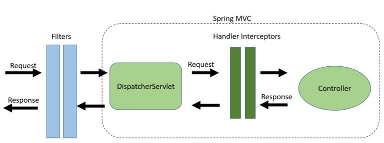

[Java] Interceptor와 Servlet Filter 알아보기
Spring 에서의 Interceptor와 Servlet Filter
Interceptor
handlerInterceptor는 Spring에서 DispatcherServlet과 Controller 사이에 존재하는 인터페이스로, Spring MVC 프레임워크의 일부입니다.
Interceptor 인터페이스는 기본적으로 3가지의 디폴트 메서드가 존재하며, 디폴트값으로 prehandle은 true를 반환하고 나머지 두 함수는 아무것도 수행하지 않습니다.
boolean preHandle(HttpServletRequest request, HttpServletResponse response, Object handler)
HandlerMapping이 적절한 핸들러 객체를 선택한 후, HandlerAdapter가 핸들러를 호출하기 이전에 호출되는 인터셉션 포인트입니다.
즉, 대상 핸들러를 호출하기 이전 실행됩니다.
DispatcherServlet은 핸들러를 마지막에 두고, 여러 개의 인터셉터로 연결된 체인 상에서 핸들러를 처리합니다.
void postHandle(HttpServletRequest request, HttpServletResponse response, Object handler, @Nullable ModelAndView modelAndView)
대상 핸들러 이후 호출되며, DispatcherServlet에 의해 뷰가 렌더링 되기 전 호출됩니다.
핸들러가 성공적으로 실행된 뒤, 호출되는 인터셉션 포인트입니다.
HandlerAdapter가 핸들러를 호출한 뒤, DispatcherServlet이 뷰를 렌더링하기 전 호출됩니다.
preHandle과 달리, 실행 체인의 역순으로 실행됩니다.
void afterCompletion(HttpServletRequest request, HttpServletResponse response, Object handler, @Nullable Exception ex)
요청이 처리되고, 렌더링이 완료될 때 호출되는 콜백 함수 입니다.
요청이 완료된, 즉 뷰가 렌더링 되고 난 뒤의 콜백 함수입니다. 핸들러의 모든 실행 후 결과에 대해 호출되기 때문에 내부에서 리소스를 정리한다던가의 행위가 가능합니다.
그리고 preHandle 메서드가 성공적으로 완료되어, true를 반환한 경우에만 afterCompletion이 호출됩니다.
postHandle과 마찬가지로, 실행 체인의 역순으로 호출됩니다.
- 따라서 체인의 첫 번째 인터셉터가 마지막으로 호출됩니다.
등록 방법
Config 클래스에 등록하기
WebMvcConfigurer를 구현한 클래스에서 아래와 같이 인터셉터를 등록합니다.
@Configuration
public class WebMvcConfig implements WebMvcConfigurer {
@Override
public void addInterceptors(InterceptorRegistry registry) {
registry.addInterceptor(new MyCustomInterceptor());
}
}
XML 사용
Spring Bean Config 파일 내부에 아래와 같이 인터셉터를 매핑해 등록합니다.
<beans>
...
<interceptors>
<interceptor>
<mapping path="/home" />
<beans:bean class="com.abc.spring.RequestProcessingTimeInterceptor"></beans:bean>
</interceptor>
</interceptors>
...
<beans/>
Servlet Filter
Servlet Filter는 Jakarta EE( 구)java EE )에 포함된 Java Servlet의 일부로, 서버로 들어오는 요청이 어떤 서블릿에도 도달하지 못하도록 막거나 응답이 클라이언트에게 도달하지 못하도록 막을 수 있는 인터페이스 입니다.
주로 인증, 로깅, 이미지 변환 등의 작업을 거치는 용도로 사용됩니다.
- 추가로,
Spring Security역시 Filter의 일종이기 때문에 Spring MVC 외부에서 사용 가능합니다.
메서드
init(FilterConfig config)
Servlet Container가 필터를 인스턴스화 한 후, 한 번만 호출되는 함수입니다.
만약 init() 함수에서 ServletException이 발생하거나, Web Container가 정의한 시간 내에 완료되지 않으면 Filter는 서비스되지 않습니다.
즉, 해당 필터가 매핑된 모든 요청은 실패하게 됩니다.
doFilter(ServletRequest request, ServletResponse response, FilterChain chain)
클라이언트와 요청된 자원 사이의 체인을 요청과 응답이 통과할 때마다 컨테이너에서 호출되는 함수입니다.
이 메서드에 전달된 FilterChain은 필터가 요청/응답을 다음 엔티티로 전달할 수 있도록 해줍니다.
주로 들어온 요청을 검사하고, request 또는 response 객체에 특정 작업을 수행 후 chain.doFilter()를 통해 체인의 다음 엔티티를 호출하거나 요청에 대한 처리를 더 이어가지 않고 차단할 수 있습니다.
destroy()
Servlet Container가 서비스 중이지 않음을 필터에 알리기 위해 한 번만 호출됩니다.
해당 필터의 doFilter 메서드를 수행하는 스레드들이 모두 종료되거나 시간 초과 기간이 끝난 후에야 호출됩니다.
컨테이너가 이 메서드를 호출한 뒤에는, 필터 인스턴스는 다시는 doFilter 메서드를 호출하지 않습니다.
등록 방법
아래와 같이 web.xml에서 <filter> 태그와 <filter-mapping> 태그를 통해 등록할 수 있습니다.
<?xml version="1.0" encoding="UTF-8"?>
<web-app xmlns:xsi="http://www.w3.org/2001/XMLSchema-instance"
xmlns="http://xmlns.jcp.org/xml/ns/javaee"
xsi:schemaLocation="http://xmlns.jcp.org/xml/ns/javaee
http://xmlns.jcp.org/xml/ns/javaee/web-app_4_0.xsd"
id="WebApp_ID" version="4.0">
...
<filter>
<filter-name>filter1</filter-name>
<filter-class>com.app.GFGFilter</filter-class>
</filter>
<filter-mapping>
<filter-name>filter1</filter-name>
<url-pattern>/GFGServlet</url-pattern>
</filter-mapping>
</web-app>
Interceptor와 Filter의 차이 밎 사용처
Filter와 Servlet의 차이점

인터셉터는 필터와 달리 핸들러 자체의 실행을 금지하는 옵션을 갖고있는 사용자 정의 전/후처리만을 허용합니다.
- 반면 필터는 체인을 통해 전달되는 요청/응답 객체의 헤더와 같은 속성을 수정할 수 있습니다.
- 필터는
web.xml에서 구성되고,HandlerInterceptor는ApplicationContext에서 구성됩니다.
Filter를 사용해야하는 상황
Filter를 사용해야하는 상황은 다음과 같습니다.
- 인증
- 로깅/검사
- 이미지/데이터 전처리
- 이외에도 Spring MVC 내부에서 분리하고자 하는 기능들
즉,
Filter는Spring MVC외부에서Request를 조작할 수 있다는 점이 유용한 케이스에 대해 효과적입니다.
예시
- 사용자의 locale에 따른 번역을 제공하는 경우
- 권한에 따라 액세스를 허용하거나 거부해야하는 경우
Interceptor를 사용해야하는 상황
반면 Interceptor를 사용하는게 나은 상황은 다음과 같습니다.
- 횡단 관심사 문제(애플리케이션 로깅) 처리
- 세부적인 권한 검사
- Spring Context/Model 조작
- 이외에도
Handler,ModelAndView에 대해 접근해야하는 경우 즉,Interceptor는Handler(Controller),ModelAndView에 접근할 수 있다는 점이 유용한 케이스에 대해 효과적입니다.
예시
- 사용자의 권한에 따라 다른 메뉴를 노출해야 하는 경우